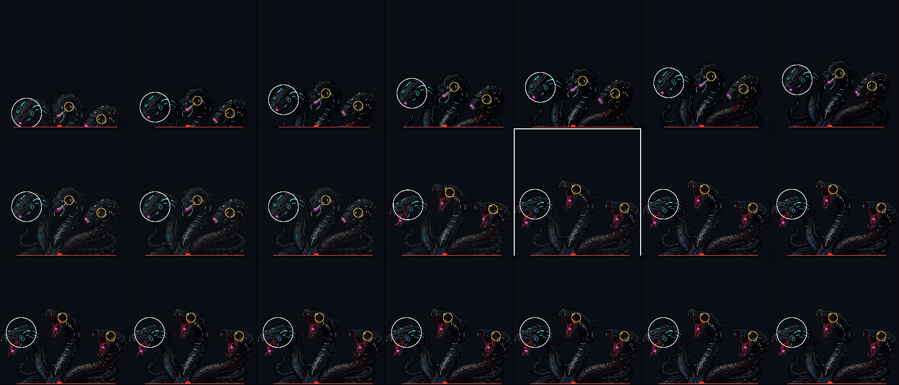
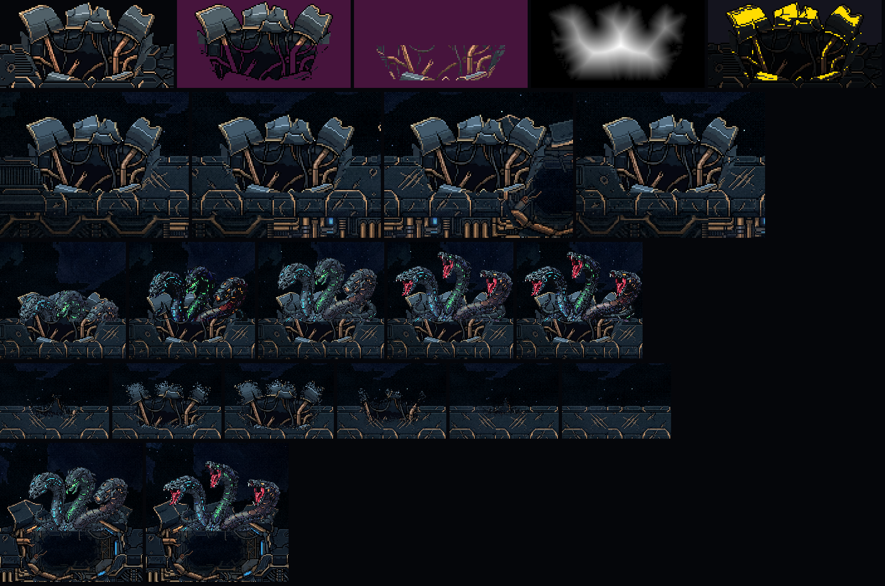

A Serpente refeita pelo CCGS: M1
31/10/2026 · GDD design/gdd/serpente-do-casco.md · arquitetura docs/architecture/serpente-do-casco-sketch.md e …-ai-sketch.md. Nada foi commitado. O backup da forma anterior está no branch backup/serpente-s1b.
O M1 é o primeiro passo, antes de qualquer outra coisa: um buraco e um clipe. A forma A sai de uma toca real no casco, no jogo, com o bote travado de verdade (o cérebro novo). Você aprova a emergência e só depois vem a forma A inteira (M2).
- No rombo, ela aparece inteira (as roscas atrás do lábio do rombo), como você pediu.
- O bote: ela mergulha, a lombada corre por baixo do casco até a nave, a ponta trava branca, e ela irrompe de uma toca real com o buraco H1. Ela sobe com a emergência (a E2 emendada no erguer) e para de boca aberta. Depois afunda, volta por baixo e sobe de novo no rombo.
- Nada cobre o corpo dela: a emergência já é desenhada cortada na linha do chão, e a borda do buraco H1 fica na frente dos pescoços. O escuro saiu do código.
- O estouro do casco solta o cascalho dos próprios pixels por trás dela. Na primeira filmagem, os pedaços do motor de destroços cobriam os pescoços com linhas vermelhas; foi corrigido antes desta folha.
A nave no filme é um boneco intocável e não atira. Ela fica em três lugares e desvia 45 px para a esquerda quando a ponta trava, para cada bote sair num x diferente.
1. No jogo, em velocidade real
2. O que ainda não está aqui (é o M2 em diante)
- Na janela ainda não há contra-ataque (o "dente"), a chuva ou os tiros de fundo. A forma A completa é o M2.
- Ela não morre neste modo de teste. A luta normal continua a de antes, intacta, e as sondas da fase 3, da fusão e dos chefões passam.
3. Para você julgar (os pontos fracos que eu já vejo)
- A descida é a subida tocada ao contrário, porque ainda não há arte de descida, e pode ler como rebobinar.
- A altura do bote é fixa: a boca só está aberta no quadro 11, com a cabeça em y ~98. Para ela morder na altura da nave, o clipe precisaria de bocas abertas em mais de uma altura (arte nova).
- Na emenda E2 → erguer a cor do pescoço muda um pouco. Isso já estava na maquete que você viu.
- A cura do buraco desfaz as placas em pontinhos. Pode ler como "esfarelando"; trocar por um ruído mais grosso é uma linha.
- A lombada e a trava branca na escala do jogo: diga se você enxerga o aviso.
- As cores do buraco H1 ficaram como na maquete. Se quiser, dá para ajustá-las ao tom do casco.
4. A arte instalada (conferida ampliada)


- em cima, o fundo, a borda e o mapa de abertura;
- no meio, o buraco no casco em vários pontos e ela saindo dele;
- embaixo, a cura e ela no rombo.